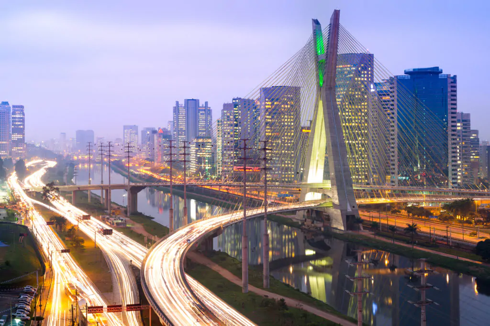
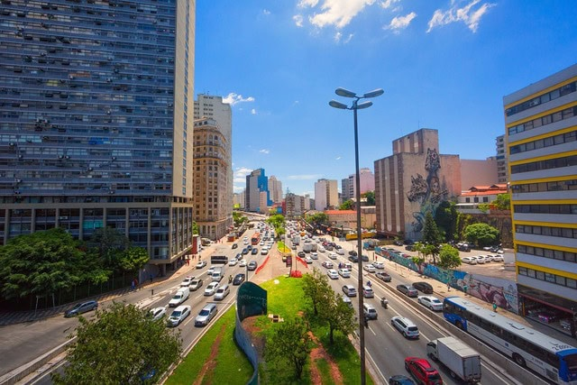
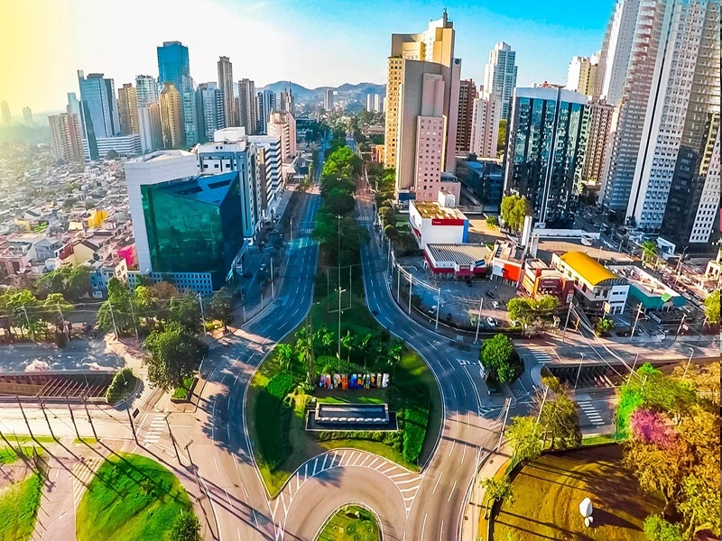
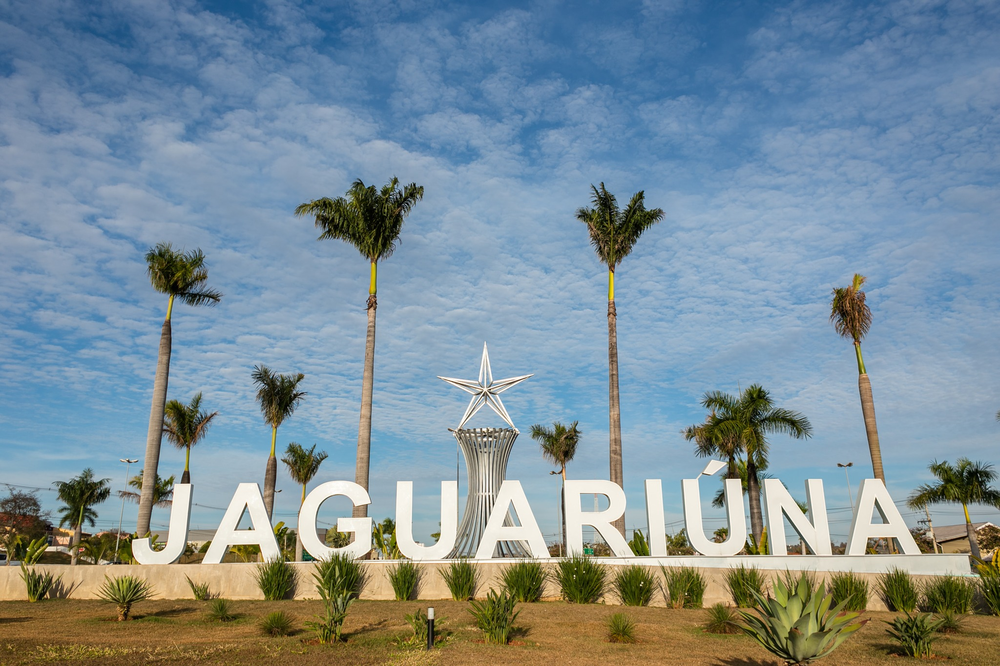
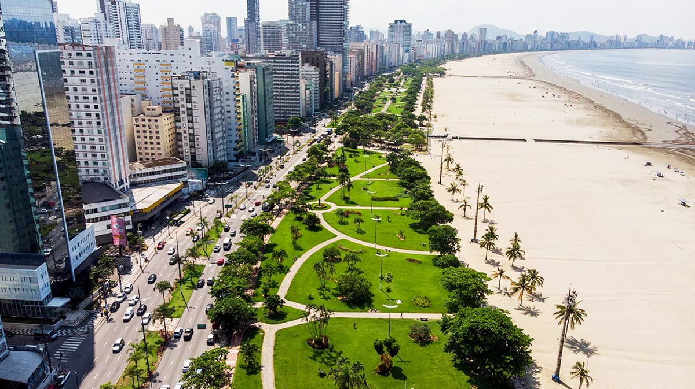
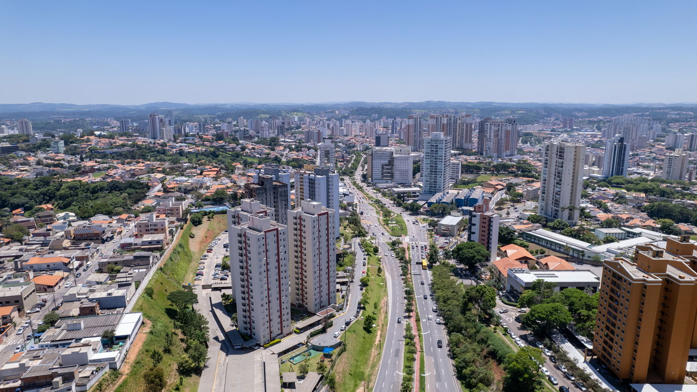
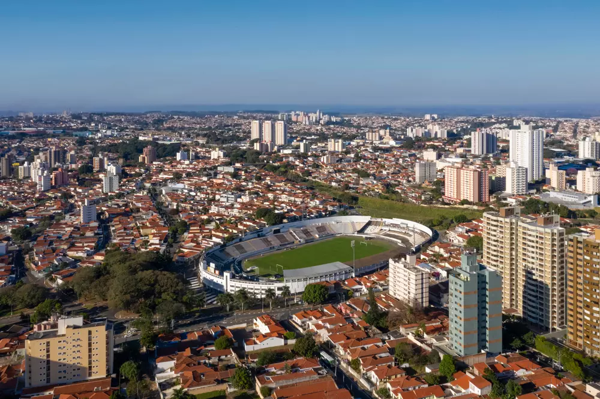

10 Melhores Cidades de são Paulo
As 10 Melhores Cidades de São Paulo para Viver em 2025
São Paulo (capital)
A cidade de São Paulo fica no planalto paulista e nasceu no alto da Serra do Mar, a partir do colégio fundado por jesuítas em 1554, no que hoje é o Pátio do Colégio. Ao longo do século XIX, ganhou força com o café, a ferrovia e a imigração europeia e japonesa. No século XX, transformou-se no maior polo urbano do país, absorvendo ondas migratórias internas e consolidando-se como metrópole global.
A economia paulistana é baseada em serviços avançados (finanças, tecnologia, mídia, saúde, educação), indústria de alto valor e economia criativa. A infraestrutura inclui múltiplas linhas de metrô e trem, grandes avenidas, aeroportos (Congonhas/Guarulhos, na RM) e hospitais de referência. O custo de vida e o trânsito são altos, mas a oferta de empregos, serviços e educação compensa para quem busca oportunidades.
Culturalmente, São Paulo é um caldeirão: MASP, Pinacoteca, Theatro Municipal, Sescs, Bienal, Virada Cultural e dezenas de festivais. A gastronomia é uma das mais diversas do mundo, com restaurantes de todas as cozinhas. Bairros como Liberdade, Bixiga, Vila Madalena e 25 de Março dão o tom da identidade plural da cidade.
Saiba Mais...
São Caetano do Sul
São Caetano surgiu como bairro rural ligado a Santo André e avançou com a industrialização do ABC no século XX. Sua área é pequena, densamente ocupada e bem planejada, com tradição de organização urbana e forte presença de imigrantes italianos na formação histórica.
A cidade figura entre as líderes nacionais em indicadores como educação, saúde, saneamento e renda per capita. A mobilidade é facilitada pela escala compacta, ciclovias, linhas de ônibus e acesso fácil a SP via CPTM e vias expressas. O mercado de trabalho é aquecido na região metropolitana, embora o custo de moradia seja elevado.
Em lazer, São Caetano oferece parques, clubes, centros esportivos e vida cultural ativa. Há calendário de eventos cívicos e gastronômicos, além de comércio de bairro vibrante. A cena de restaurantes e cafeterias é crescente, e a proximidade com a capital amplia opções de shows, museus e teatros.
Saiba Mais...
Barueri
Barueri tem raízes que remontam a antigas rotas bandeirantes e consolidou-se na segunda metade do século XX com a criação e expansão de Alphaville. A localização ao longo do eixo Castelo–Rodoanel favoreceu a atração de investimentos e moradores.
A economia é robusta, com sedes corporativas, centros logísticos e tecnologia. A arrecadação acima da média sustenta serviços públicos de boa qualidade e projetos urbanos. Segurança, educação municipal e equipamentos esportivos se destacam; o custo imobiliário, em especial em Alphaville, é alto.
No lazer, Barueri oferece parques bem mantidos, arena esportiva, centros culturais e shopping centers. Restaurantes e cafés atendem tanto executivos quanto famílias. A vida comunitária em bairros planejados, com praças e clubes, é um atrativo para quem busca rotina organizada perto da capital.
Saiba Mais...
Jaguariúna
Jaguariúna pertence à Região Metropolitana de Campinas e teve sua história marcada pela ferrovia Mogiana, com estações ainda preservadas. O ambiente de interior, com áreas verdes e cursos d’água, ajuda a compor a identidade local.
A cidade investe em educação, saúde e urbanismo, mantendo índices de segurança e qualidade de vida atrativos. A economia combina serviços, pequenas indústrias, tecnologia e turismo de eventos. A conexão com Campinas facilita acesso a universidades, aeroportos e hospitais.
Culturalmente, é conhecida pelo Jaguariúna Rodeo Festival, que movimenta a economia criativa e o turismo. Há passeios de maria-fumaça, parques, cicloturismo e gastronomia regional em crescimento. O clima de cidade média, com ritmo tranquilo, atrai famílias.
Saiba Mais...
Santana de Parnaíba
Fundada no século XVI às margens do rio Tietê, Santana de Parnaíba preserva um centro histórico colonial muito bem conservado. Sua trajetória se relaciona às rotas bandeirantes e ao desenvolvimento do oeste metropolitano.
Hoje, destaca-se por bons índices de segurança, planejamento urbano e serviços municipais. A economia se beneficia da proximidade com Barueri/Alphaville e do acesso ao Rodoanel e Castelo Branco. Bairros residenciais planejados, áreas verdes e oferta escolar compõem o pacote de qualidade de vida.
O centro histórico é palco de eventos culturais, como a tradicional encenação da Paixão de Cristo. Feiras, festivais gastronômicos e trilhas nos arredores complementam o lazer. A mistura de patrimônio, natureza e facilidades modernas é um diferencial da cidade.
Saiba Mais...
Santos
Santos nasceu no século XVI, ligada ao porto natural da Ilha de São Vicente, e foi peça chave do ciclo do café. A urbanização costeira e os jardins da orla moldaram sua paisagem icônica.
A economia gira em torno do maior porto da América Latina, logística, comércio e serviços, além de educação e saúde de referência na Baixada Santista. Os índices de saneamento e a malha cicloviária à beira-mar contribuem para o bem-estar. O custo de vida é compatível com a infraestrutura e a localização litorânea.
No lazer, as praias urbanas, o jardim da orla, o bonde histórico e os museus (como o do Café) são destaques. O calendário esportivo inclui corrida, ciclismo e esportes náuticos. A gastronomia costeira e a vida cultural com teatros e centros culturais completam a experiência.
Saiba Mais...
Jundiaí
Jundiaí surgiu no período colonial e se projetou com a ferrovia Santos–Jundiaí e as fazendas de uva, que deixaram marcas na identidade local. A localização estratégica entre São Paulo e Campinas sempre foi trunfo logístico.
A cidade exibe bons indicadores de renda, educação, saneamento e áreas verdes. A economia é diversificada, com indústria, logística, comércio e agronegócio. Parques bem cuidados e vias de acesso ágeis elevam a qualidade de vida, com custo relativamente competitivo para o padrão oferecido.
A Rota da Uva, vinícolas familiares, festivais gastronômicos e o turismo rural são cartões-postais. Há centros culturais, teatro, eventos esportivos e trilhas em serras próximas. A combinação de tradição agrícola e serviços modernos cria um estilo de vida equilibrado.
Saiba Mais...
Campinas
Campinas nasceu no século XVIII associada ao ciclo do açúcar e do café, e se reinventou como polo científico e tecnológico no século XX. A presença da Unicamp e de centros de P&D moldou seu perfil inovador.
A economia é uma das mais fortes do interior do país, com tecnologia, indústria, serviços especializados e um aeroporto internacional na região (Viracopos). A cidade oferece hospitais, universidades e ampla rede de comércio. O trânsito pode ser desafiador, mas a malha viária regional é um diferencial.
No campo cultural, teatros, museus, festivais universitários e cena musical ativa convivem com parques como a Lagoa do Taquaral. Restaurantes variados e vida noturna estudantil dão ritmo à cidade. Shoppings, centros esportivos e ciclovias completam as opções de lazer.
Saiba Mais...
Sorocaba
Sorocaba tem origem no tropeirismo e cresceu com a industrialização, especialmente a partir do século XX. Sua posição no eixo Castelo Branco/ Raposo Tavares favoreceu a atração de empresas.
A cidade é polo regional de indústria e serviços, com bons índices de educação e saúde e custos mais moderados que metrópoles maiores. Infraestrutura urbana, distritos industriais e parques tecnológicos sustentam oportunidades de trabalho e negócios.
Em lazer, Sorocaba abriga parques como o Zoológico Municipal/Quinzinho de Barros, ciclovias extensas e centros culturais. Eventos e feiras movimentam o calendário local. A gastronomia regional e os cafés de bairro reforçam o clima acolhedor.
Sorocaba
Santo André
Santo André remonta à antiga vila de São Bernardo (século XVI) e ganhou corpo com a ferrovia e a industrialização do ABC. Sua história está ligada ao desenvolvimento automobilístico e metalúrgico do país.
A economia atual combina indústria, comércio e serviços, com forte vida universitária e rede hospitalar. A malha de transporte conecta a capital via trem e corredores de ônibus. Bairros residenciais arborizados e políticas ambientais têm destaque; o custo de vida é intermediário na RM.
Em cultura e lazer, os parques (Central, Celso Daniel) e o acesso ao Parque Natural da Serra do Mar são atrativos. Há teatros, espaços de exposições, centros de formação artística e calendário de feiras. A cena gastronômica é variada, com bares e restaurantes tradicionais do ABC.
Santo André